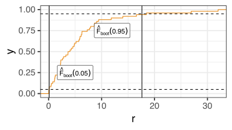
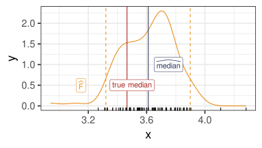

18 The bootstrap
Stat 406
Geoff Pleiss, Trevor Campbell
Last modified – 29 October 2024
\[
\DeclareMathOperator*{\argmin}{argmin}
\DeclareMathOperator*{\argmax}{argmax}
\DeclareMathOperator*{\minimize}{minimize}
\DeclareMathOperator*{\maximize}{maximize}
\DeclareMathOperator*{\find}{find}
\DeclareMathOperator{\st}{subject\,\,to}
\newcommand{\E}{E}
\newcommand{\Expect}[1]{\E\left[ #1 \right]}
\newcommand{\Var}[1]{\mathrm{Var}\left[ #1 \right]}
\newcommand{\Cov}[2]{\mathrm{Cov}\left[#1,\ #2\right]}
\newcommand{\given}{\ \vert\ }
\newcommand{\X}{\mathbf{X}}
\newcommand{\x}{\mathbf{x}}
\newcommand{\y}{\mathbf{y}}
\newcommand{\P}{\mathcal{P}}
\newcommand{\R}{\mathbb{R}}
\newcommand{\norm}[1]{\left\lVert #1 \right\rVert}
\newcommand{\snorm}[1]{\lVert #1 \rVert}
\newcommand{\tr}[1]{\mbox{tr}(#1)}
\newcommand{\brt}{\widehat{\beta}^R_{s}}
\newcommand{\brl}{\widehat{\beta}^R_{\lambda}}
\newcommand{\bls}{\widehat{\beta}_{ols}}
\newcommand{\blt}{\widehat{\beta}^L_{s}}
\newcommand{\bll}{\widehat{\beta}^L_{\lambda}}
\newcommand{\U}{\mathbf{U}}
\newcommand{\D}{\mathbf{D}}
\newcommand{\V}{\mathbf{V}}
\]
Uncertainty with one sample?
We get data \(X_{1:N},Y_{1:N}\) . We compute something from the data \(\hat\theta = f(X_{1:N},Y_{1:N})\) .
That \(\ \hat\theta\) is a point estimate (regression coeffs, median of \(Y\) , risk estimate…)
How do we understand the uncertainty in \(\hat\theta\approx \theta\) due to randomness in \(X_{1:N}, Y_{1:N}\) ?
If we know the sampling distribution of \(\hat\theta\) , we can use variance / confidence intervals.
We usually don’t know that in practice (don’t know real data dist, \(f\) can be nasty)
For some \(\hat\theta\) , things are nice anyway. E.g. for empirical mean \(\hat\theta = \frac{1}{N}\sum_{n=1}^N X_n\) with iid \(X_n\) :
\(\Var{\hat\theta} = \Var{X_1} / n\) .Confidence Intervals: if \(X_n\) are iid and \(n\) “big”, then CLT : \(\hat\theta \overset{\text{approx}}{\sim}\mathcal{N}(\mu, \sigma^2/n)\)
Unknown sampling distribution?
What if you are skeptical of CLT / don’t know the sampling distribution?
I fit LDA on some data.
I get a new \(X_0\) and produce \(\hat\theta = \Pr(Y_0 =1 \given X_0)\) .
Can I get a 95% confidence interval for \(\theta = \Pr(Y_0=1 \given X_0)\) ?
The bootstrap gives this to you.
Etymology of the “bootstrap”
“to build itself up incrementally, starting from very little”
“to create something valuable from very little/nothing”
attributed to a late 1800s physics textbook question
“why can a man not lift himself up by pulling on his bootstraps?”
became a sarcastic comment about self-driven socioeconomic advancement
as these things go: co-opted by others and taken seriously
fun fact: same etymology for the term in computing
“booting up your computer”
Generic Bootstrap Procedure
The bootstrap is super general-purpose . Given data \(X_{1:N}, Y_{1:N}\) :
Compute \(\hat\theta = f(X_{1:N}, Y_{1:N})\)
For \(b=1,\dots, B\) , resample data w/ replacement: \(X^{(b)}_{1:N}, Y^{(b)}_{1:N}\) (bootstrap samples )
For \(b=1,\dots, B\) , recompute \(\hat\theta^{(b)} = f(X^{(b)}_{1:N}, Y^{(b)}_{1:N}\) ) (bootstrap estimates )
Variance of \(\hat\theta \approx\) the empirical variance of \(\hat\theta^{(b)}\)
\((1-\alpha)\) % Confidence Interval for \(\theta\) : \(\left[2\hat\theta - \widehat{F}_{\text{boot}}(1-\alpha/2),\ 2\hat\theta - \widehat{F}_{\text{boot}}(\alpha/2)\right]\)
\(\widehat{F}_{\text{boot}}\) is the empirical CDF of the samples \(\hat\theta^{(b)}\)
The bootstrap is very flexible
e.g., for LDA:
Produce the original estimate \(\hat\theta=\widehat{\Pr}(Y_0=1 \given X_0)\)
Resample your training data \(B\) times with replacement
Refit LDA for each one to produce \(\widehat{\Pr}\nolimits_b(Y_0 =1 \given X_0)\) .
Variance: empirical variance of \(\widehat{\Pr}\nolimits_b(Y_0 =1 \given X_0)\) .
CI: \(\left[2\widehat{\Pr}(Y_0 =1 \given X_0) - \widehat{F}_{\text{boot}}(1-\alpha/2),\ 2\widehat{\Pr}(Y_0 =1 \given X_0) - \widehat{F}_{\text{boot}}(\alpha/2)\right]\)
\(\widehat{F}_{\text{boot}}\) is the empirical CDF of the samples \(\widehat{\Pr}\nolimits_b(Y_0 =1 \given X_0)\)
A basic example
Let \(X_i\sim \textrm{Exponential}(1/5)\) . The pdf is \(f(x) = \frac{1}{5}e^{-x/5}\)
I know if I estimate the mean with \(\bar{X}\) , then by the CLT (if \(n\) is big),
\[\frac{\sqrt{n}(\bar{X}-E[X])}{s} \approx N(0, 1).\]
This gives me a 95% confidence interval like \[\bar{X} \pm 2s/\sqrt{n}\]
But I don’t want to estimate the mean, I want to estimate the median.
Code
ggplot (data.frame (x = c (0 , 12 )), aes (x)) + stat_function (fun = function (x) dexp (x, 1 / 5 ), color = orange) + geom_vline (xintercept = 5 , color = blue) + # mean geom_vline (xintercept = qexp (.5 , 1 / 5 ), color = red) + # median annotate ("label" ,x = c (2.5 , 5.5 , 10 ), y = c (.15 , .15 , .05 ),label = c ("median" , "bar(x)" , "pdf" ), parse = TRUE ,color = c (red, blue, orange), size = 6

Empirical distribution
Code
= tibble (boots = Fhat)ggplot (bootdf, aes (boots)) + stat_ecdf (colour = orange) + geom_vline (xintercept = quantile (Fhat, probs = c (.05 , .95 ))) + geom_hline (yintercept = c (.05 , .95 ), linetype = "dashed" ) + annotate ("label" , x = c (3.2 , 3.9 ), y = c (.2 , .8 ), label = c ("hat(F)[boot](.05)" , "hat(F)[boot](.95)" ), parse = TRUE
Result
Code
ggplot (data.frame (Fhat), aes (Fhat)) + geom_density (color = orange) + geom_vline (xintercept = CI, color = orange, linetype = 2 ) + geom_vline (xintercept = med, col = blue) + geom_vline (xintercept = qexp (.5 , 1 / 5 ), col = red) + annotate ("label" ,x = c (3.15 , 3.5 , 3.75 ), y = c (.5 , .5 , 1 ),color = c (orange, red, blue),label = c ("widehat(F)" , "true~median" , "widehat(median)" ),parse = TRUE + xlab ("x" ) + geom_rug (aes (2 * med - Fhat))

How does this work?
The Fundamental Premise (TM): a sufficiently large sample looks like the population .
So, sampling from the sample looks like sampling from the population.
Population:
Medians for samples of size \(N=100\) :
One Sample ( \(N = 100\) ):
Medians for samples of size \(N=100\) :
Bootstrap error sources
Simulation error
using only \(B\) samples to estimate \(F\) with \(\hat{F}\) .
Statistical error
our data depended on a sample from the population. We don’t have the whole population so we make an error by using a sample (Note: this part is what always happens with data, and what the science of statistics analyzes.)
Specification error
If we use the parametric bootstrap, and our model is wrong, then we are overconfident.
Types of intervals
Let \(\hat{\theta}\) be our sample statistic, \(\hat\theta^{(b)}\) be the resamples
Our interval is
\[
[2\hat{\theta} - \hat\theta^{(b)}_{1-\alpha/2},\ 2\hat{\theta} - \hat\theta^{(b)}_{\alpha/2}]
\]
where \(\theta^{(b)}_q\) is the \(q\) quantile of \(\hat\theta^{(b)}\) .
Called the “Pivotal Interval”
Has the correct \(1-\alpha\) % coverage under very mild conditions on \(\hat{\theta}\)
Types of intervals
Let \(\hat{\theta}\) be our sample statistic, \(\hat\theta^{(b)}\) be the resamples
\[
[\hat{\theta} - z_{1-\alpha/2}\hat{s},\ \hat{\theta} + z_{1-\alpha/2}\hat{s}]
\]
where \(\hat{s} = \sqrt{\Var{\hat\theta^{(b)}}}\)
Called the “Normal Interval”
Only works if the distribution of \(\hat{\theta^{(b)}}\) is approximately Normal.
Common and really tempting, but not likely to work well
Don’t do this
Types of intervals
Let \(\hat{\theta}\) be our sample statistic, \(\hat\theta^{(b)}\) be the resamples
\[
[\hat\theta^{(b)}_{\alpha/2},\ \hat\theta^{(b)}_{1-\alpha/2}]
\]
where \(\hat\theta^{(b)}_q\) is the \(q\) quantile of \(\hat\theta^{(b)}\) .
Called the “Percentile Interval”
Better than the Normal Interval, more assumptions than the Pivotal Interval
We teach this one in DSCI100 because it’s easy and “looks right” (it’s not, in general)
Unlike Pivotal, doesn’t follow from the fundamental premise of bootstrap
It does have (asymp) right coverage if \(\exists\) monotone \(m\) so that \(m(\hat\theta) \sim N(m(\theta), c^2)\)
Slightly harder example
ggplot (fatcats, aes (Bwt, Hwt)) + geom_point (color = blue) + xlab ("Cat body weight (Kg)" ) + ylab ("Cat heart weight (g)" )
<- lm (Hwt ~ 0 + Bwt, data = fatcats)summary (cats.lm)
Call:
lm(formula = Hwt ~ 0 + Bwt, data = fatcats)
Residuals:
Min 1Q Median 3Q Max
-9.8138 -0.9014 -0.2155 0.7548 22.5957
Coefficients:
Estimate Std. Error t value Pr(>|t|)
Bwt 3.88297 0.08401 46.22 <2e-16 ***
---
Signif. codes: 0 '***' 0.001 '**' 0.01 '*' 0.05 '.' 0.1 ' ' 1
Residual standard error: 2.789 on 143 degrees of freedom
Multiple R-squared: 0.9373, Adjusted R-squared: 0.9368
F-statistic: 2136 on 1 and 143 DF, p-value: < 2.2e-16
2.5 % 97.5 %
Bwt 3.716912 4.049036
When we fit models, we examine diagnostics
qqnorm (residuals (cats.lm), pch = 16 , col = blue)qqline (residuals (cats.lm), col = orange, lwd = 2 )
The tails are too fat. I don’t believe that CI…
We bootstrap
<- 500 <- .05 <- map_dbl (1 : B, ~ {<- fatcats |> slice_sample (prop = 1 , replace = TRUE )coef (lm (Hwt ~ 0 + Bwt, data = newcats))2 * coef (cats.lm) - # Bootstrap CI quantile (bhats, probs = c (1 - alpha / 2 , alpha / 2 ))
97.5% 2.5%
3.731614 4.030176
confint (cats.lm) # Original CI
2.5 % 97.5 %
Bwt 3.716912 4.049036
An alternative
So far, I didn’t use any information about the data-generating process.
We’ve done the non-parametric bootstrap
This is easiest, and most common for the methods in this module
But there’s another version
Same data
Non-parametric bootstrap
Same as before
<- 500 <- .05 <- map_dbl (1 : B, ~ {<- fatcats |> slice_sample (prop = 1 , replace = TRUE )coef (lm (Hwt ~ 0 + Bwt, data = newcats))2 * coef (cats.lm) - # NP Bootstrap CI quantile (bhats, probs = c (1 - alpha / 2 , alpha / 2 ))
97.5% 2.5%
3.726857 4.038470
confint (cats.lm) # Original CI
2.5 % 97.5 %
Bwt 3.716912 4.049036
Parametric bootstrap
Assume that the linear model is TRUE.
Then, \(\texttt{Hwt}_i = \widehat{\beta}\times \texttt{Bwt}_i + \widehat{e}_i\) , \(\widehat{e}_i \approx \epsilon_i\)
The \(\epsilon_i\) is random \(\longrightarrow\) just resample \(\widehat{e}_i\) .
<- 500 <- double (B)<- lm (Hwt ~ 0 + Bwt, data = fatcats)<- residuals (cats.lm)<- map_dbl (1 : B, ~ {<- fatcats |> mutate (Hwt = predict (cats.lm) + sample (r, n (), replace = TRUE )coef (lm (Hwt ~ 0 + Bwt, data = newcats))2 * coef (cats.lm) - # Parametric Bootstrap CI quantile (bhats, probs = c (1 - alpha / 2 , alpha / 2 ))
97.5% 2.5%
3.707015 4.035300
Next time…
Bootstrap for bagging and random forests